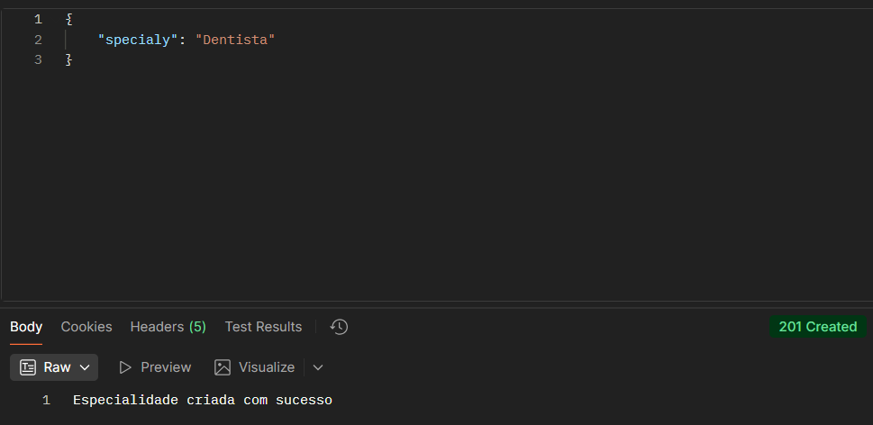
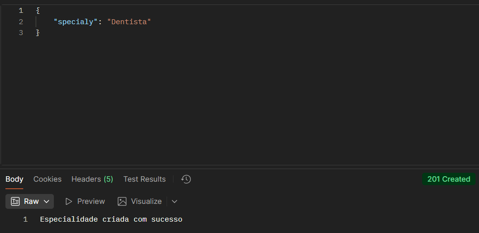

Atributos:
specialy: String.
Não permite criar especialidades identicas. Retorna 409 caso já exista.


Atributos:
specialy: String.
Não permite criar especialidades identicas. Retorna 409 caso já exista.


No caso de não ser bem sucedido irá retornar 404.

Se o paciente for encontrado, retornará um 302.
Se deletado, retorna 200.
Se não for encontrado a especialidade, retorna 404.